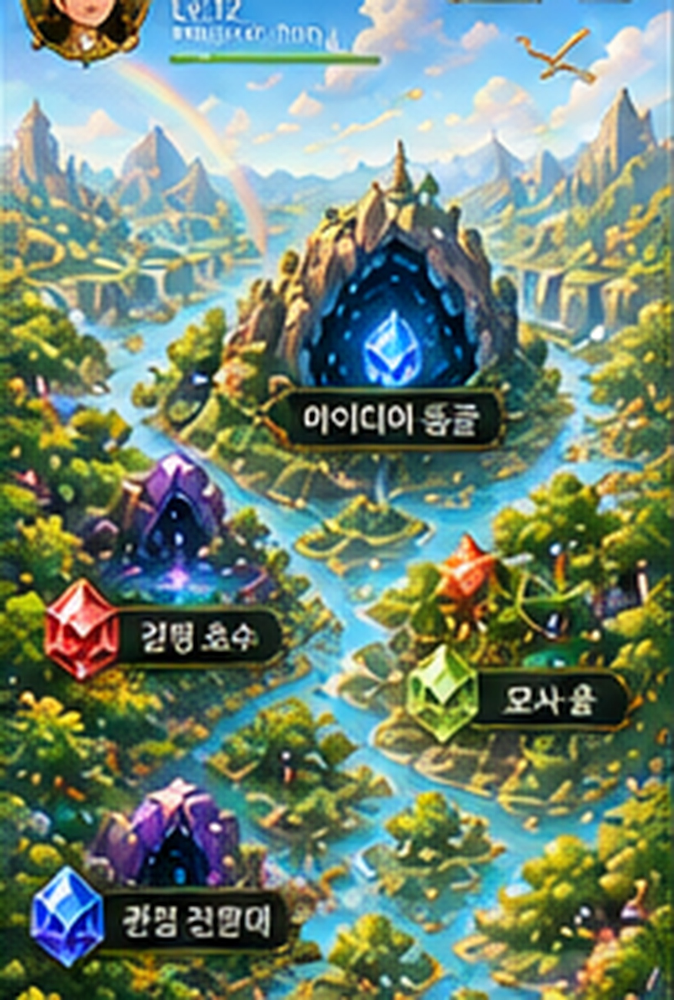
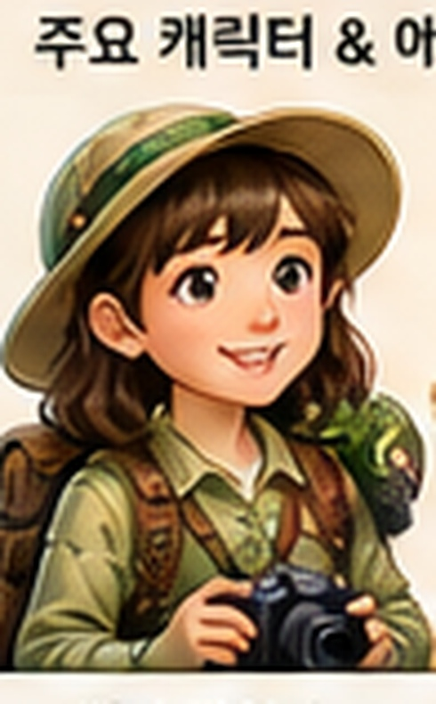
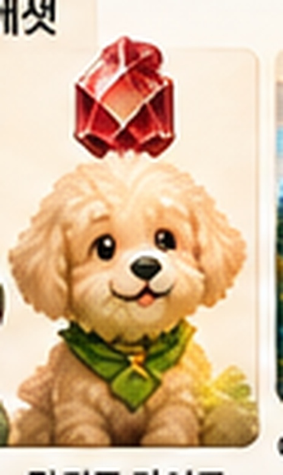
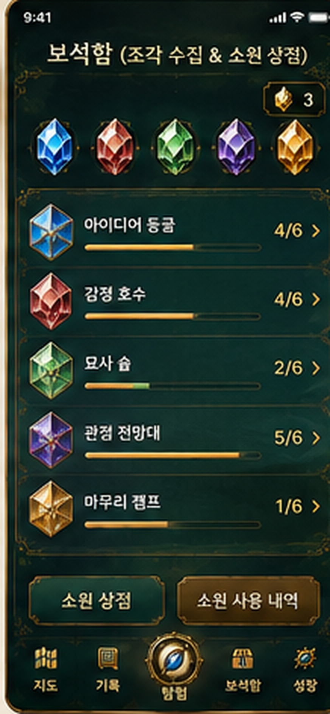
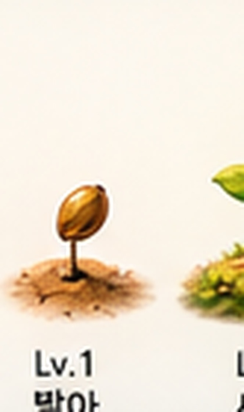
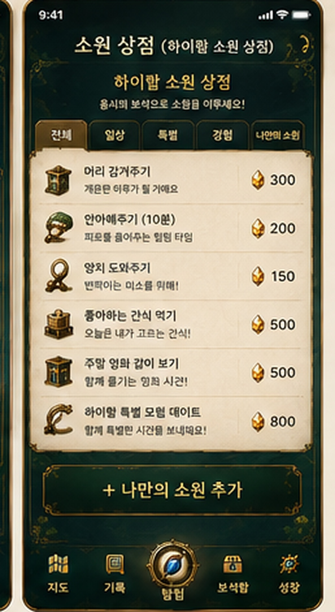

기록
완성한 탐험과 특별한 기억이 날짜별로 쌓여요.
3단계 탐험
탐험 진행
무엇이 떠올랐어?
완벽한 문장일 필요 없어. 먼저 떠오르는 걸 잡아보자.
보석함
탐험으로 모은 조각과 완성 보석을 확인해요.

한 그루의 성장 기록
성장
같은 나무가 글쓰기 경험과 함께 땅에서 발아하고, 새싹을 거쳐 점점 거목으로 자랍니다.
Lv.1
발아

EXP 0
탐험가의 소원 상점

주말 영화 같이 보기완성 보석 2개
축복 사용하기
완성 보석 2개를 사용해 이 소원을 확정할까요?
설정
내 캐릭터사진 다시 찍기 · 사진 업로드하기
나의 길잡이길잡이 바꾸기 · 이름 바꾸기